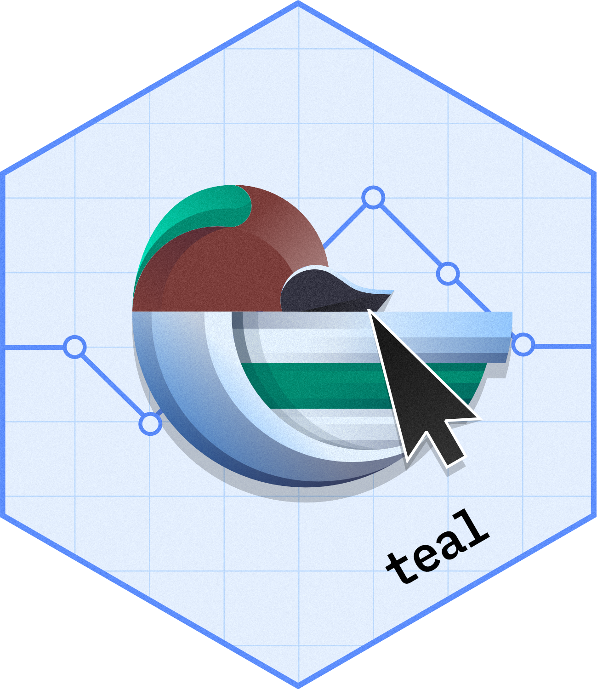
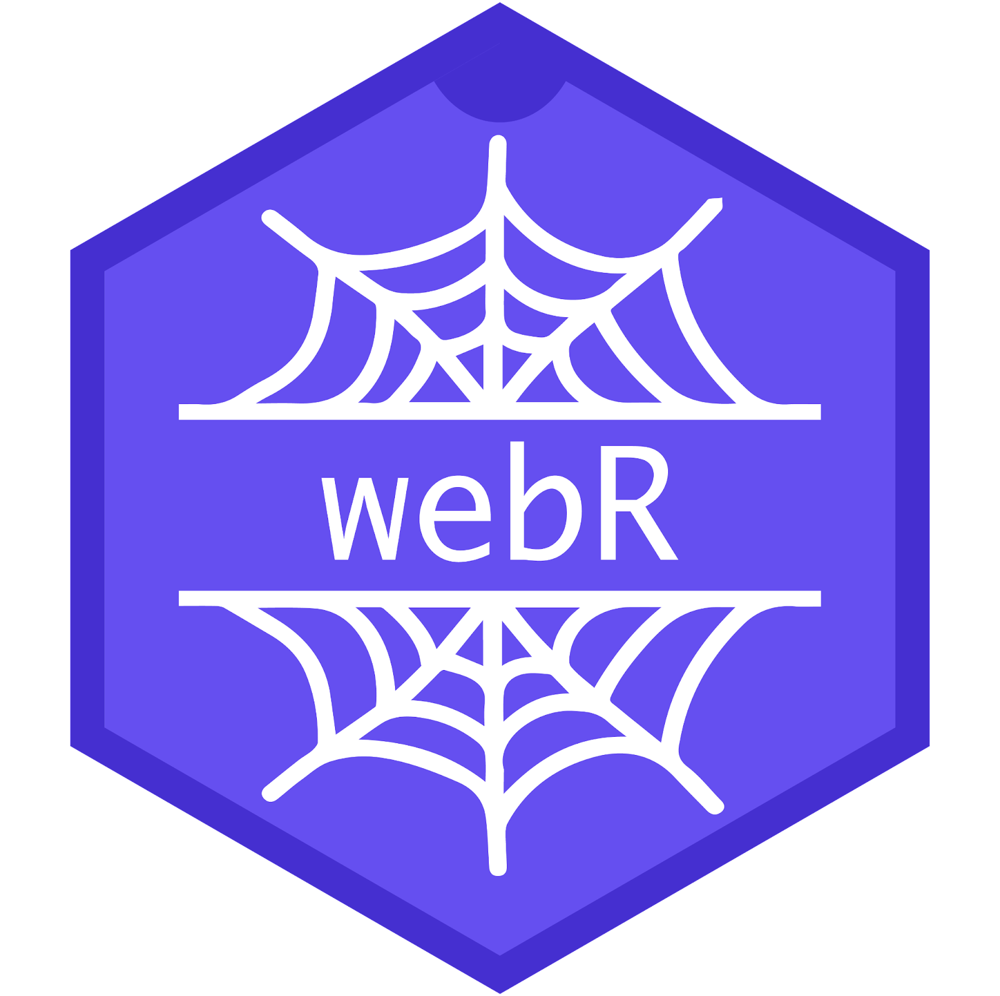
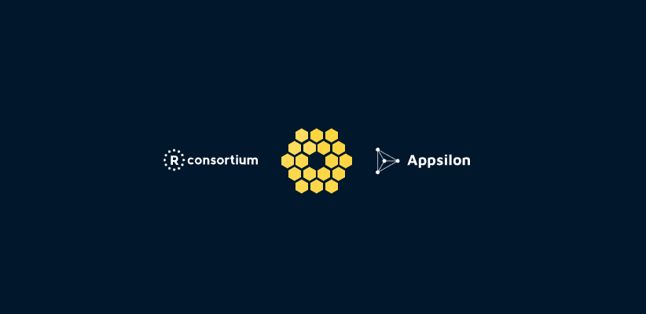
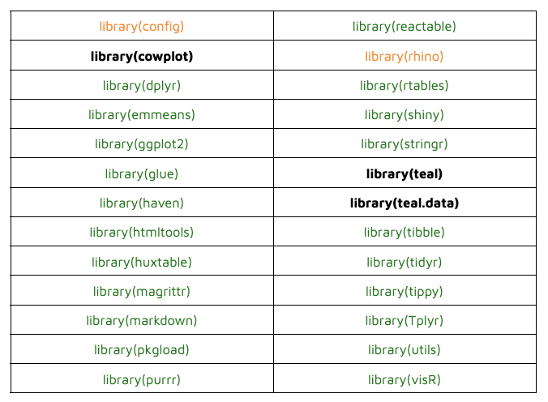
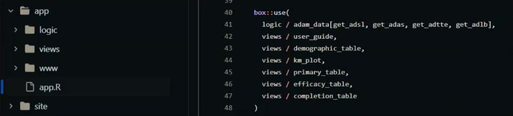
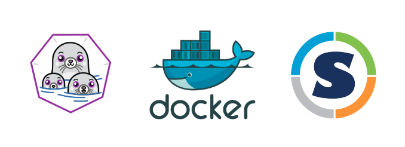
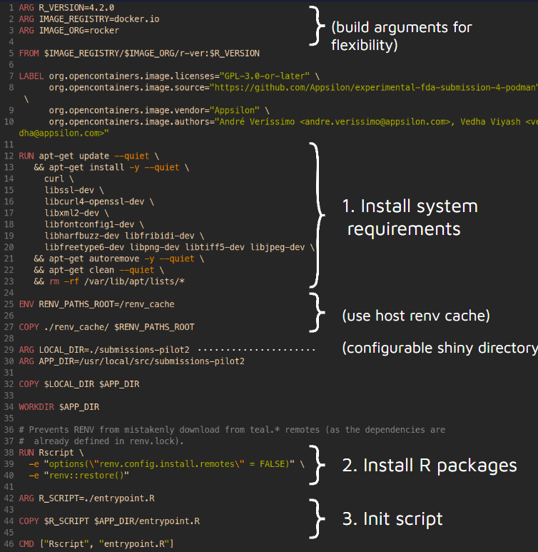
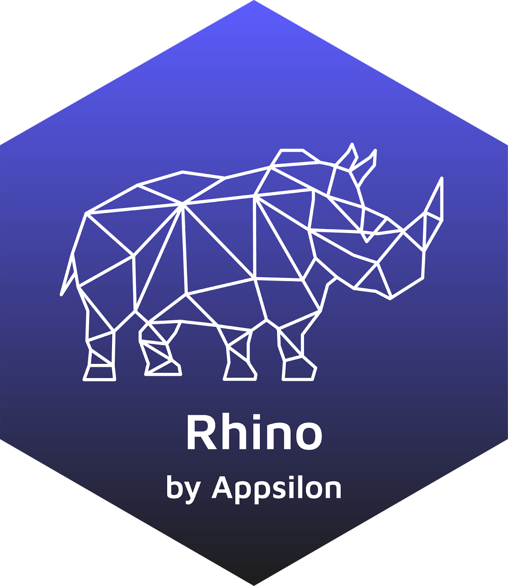

The R Consortium Submission Working Group has now successfully made two pilot submissions to the FDA. All the submissions done by the group are focused on improving practices for R-based clinical trial regulatory submissions. Now, the R submission Working Groups, in collaboration with Appsilon and Posit, are exploring new technologies such as Containers and WebAssembly. In this article, we dive into the details of this exploration.
How Everything Started
Pilot 1
This pilot was initially submitted on November 22, 2021. This submission was the first publicly available R-based submission to the FDA. This was a test submission that aimed to explore the submission of an R package to the FDA following the eCTD specifications. The submission included an R package, R scripts for analysis, R-based analysis data reviewed guide (ADRG), and other important components. The final response letter from the FDA was received on March 14, 2022.
Pilot 2
This was one of the first submission packages containing a Shiny application. The main goal of this pilot was to test the submission of an R-based Shiny application bundled into a submission package and transfer it successfully to FDA reviewers. The submitted application was built using the datasets and analyses that were used for the R Submission Pilot 1. The deployed version of this application is available on this site. Alternatively, a Rhino-based version of the application can be found here.
The final response letter from the FDA was reviewed on September 27, 2023.

In this submission, there were many open-source R packages that were used to create and execute the Shiny application. A very well-known shiny-based interactive exploration framework {teal} was used mainly for analyzing the clinical trial data; this package is included in the pharmaverse package repository. The full list of open-source and proprietary R analysis packages is available on this Analysis Data Reviewer’s Guide prepared by the R Consortium R Submissions Working Group for the Pilot 2.
What’s next?
Pilot 3
This pilot was successfully submitted to the FDA on Aug 28, 2023. This was the first publicly available R submission that included R scripts to produce ADaM datasets and TLFs. Both the ADaMs (SDTM .xpt sources from the CDISC Pilot study) and the TLFs (ADaMs .xpt sourced from the ADaMs generated in R by the Pilot 3 team) were created using R. The next step for this pilot is to await FDA’s review and approval, which may take several months to complete.
Pilot 4
This pilot aims to explore using technologies such as containers and WebAssembly software to package a Shiny application into a self-contained unit, streamlining the transfer and execution process for enhanced efficiency.
This pilot is expected to be divided into two parallel submissions:
(a) will investigate WebAssembly and
(b) will investigate containers.
The Journey with WebAssembly and Containers
Our team at Appsilon teamed up with the dynamic Pilot 4 crew to explore WebAssembly technology and containers. George Stagg and Winston Chang also joined the working group to discuss the web-assembly portion of Pilot 4. This partnership brought together our engineering prowess to contribute to these tools, injecting fresh perspectives into the ongoing pilot project.
Some of the outcomes of the collaboration:
We were able to set up a robust container environment for this pilot project.
We aided the progress made on the use of both experimental technologies: containers and WebAssembly.
We developed a working prototype submission using Podman container technology.
We developed a working early-stage prototype for wrapping a small Shiny application using WebAssembly.
WebAssembly

WebAssembly allows languages like R to be executed at near-native speed directly within web browsers, providing users with the ability to run R code without having R installed locally. WebR is essentially the R programming language adapted to run in a web browser environment using WebAssembly. This project is under active development.
The Pilot 4 Shiny App Up and Running on webR!

The deployed example of the Shiny app running on webR is available here. Check out the video of the application running below.
During this pilot, engineers at Appsilon developed a prototype of a Shiny application running on webR. The application reuses most of the code from the previous pilot apps with some tweaks and a couple of hacks/changes to get around non CRAN dependencies, specially for data loading, WebR compatibilities, and shimming some of the functionality from {teal} and other packages that are (for now) not available on CRAN.
webR Shiny App
During the second iteration, which was recently held, Pedro Silva shared the process of developing this Shiny app running on webR.
The Process
Leverage the last 2 iterations of the application
Reuse as much code as possible
Avoid touching the logic part
Restrict the number of dependencies to packages on CRAN
- Replace/shim functionality that was lost from removing dependencies
Here is the list of dependencies to packages on CRAN; those that worked are colored green, and those that were removed are marked in orange. We ended up with just 3 problematic dependencies (bold).

Issues with library(cowplot):
- Some issues with low-level dependencies when deployed
Solution:
- Replace functionality with HTML
Issues with library(teal):
- Uses {shiny.widgets} (not working for webR)
Solution:
Redo the UI
Load modules directly
Recreate filter functionality
Issues with library(teal.data):
- Use rds exports
Solution:
- Shim functionality, load data directly
Leverage shinylive and httpuv to export and serve the application
Shinylive can help streamline the export process
Problems
shiny.live won’t let us have non-R files in the application directory - this is an outstanding bug that George asked us to raise an issue for.
We wouldn’t be able to run the application as a traditional shiny app.
Solution:
- Custom build script
{httpuv} can help serve the application
- {httpuv} would run natively on a machine to serve the Shiny app
Application Structure
The figure below shows an overview of what we ended with:

Some of the issues and solutions found at the very beginning:
- The previous applications were built using golem and another one in Rhino; the support for these frameworks is not great in webR up to now.
- Solution
- {box} works out of the box (reuse the rhino version modules)
- Simplify the structure and use a simple shiny modular structure
- Solution
- Shinylive does not like non-R files when generating the bundle
- Solution
- Keep the app folder as clean as possible for now (www folder only)
- Solution
- {teal} and {teal.data} are not on CRAN
- Solution
- Shim and used functionality
- Use a simple tab system for the UI structure
- Solution
The FDA was previously told that the shiny application being prepared for the Pilot 4 submission would not be a 1 to 1 mapping from the previous one submitted for the Pilot 2 due to certain constraints such as {teal} not being on CRAN; however, this didn’t represent a problem for them since they would mainly like to test the technology.
Pedro Silva, one of the engineers working on the development of this app, mentioned “While WebR is still in development, it shows tremendous promise! The loading is definitely still a pain point (over 100mb to set up the environment!) but it will only get better moving forward.”
Containers

Containerization, particularly through technologies like Docker, Podman or Singularity, offers several advantages for deploying Shiny apps.
Choosing the Right Container
Choosing the right container was a question that arose in this project. Although Docker is the most popular, we decided to move forward with Podman.
In our exploration of containerization tools for deploying Shiny applications, we’ve identified key distinctions between Docker and Podman that influenced our choice.
Podman stands out for its daemonless architecture, enhancing security by eliminating the need for a central daemon process. Unlike Docker, Podman supports running containers as non-root users, a critical feature for meeting FDA reviewer requirements. Developed by Red Hat and maintained as an open-source project, Podman prioritizes security with its rootless container support, offering a robust solution for security-conscious users.
Goals
A Container-based method to deploy Pilot 2 Shiny App.
What we did
Configurable Podman Dockerfile / docker-compose.yml
- R version
- Registry / organization name / image name (differences between docker.io and ghcr.io)
Documentation on creating the container
CI: Automated build on amd64 and arm64 platforms
Podman short-demo
Below is the dockerfile (recipe) for the container:

Next Steps
The next steps are waiting for the review of Pilot 3 by the FDA and to submit the two sections that explore the new technologies to regulatory authorities. Thanks to the collaboration between the R Submission Working Group and other institutions, there is already a working prototype of a {teal}-like Shiny application running on webR and further exploration with Podman is underway.
- Submission to FDA
- Rhino Compatibility

Appsilon is working on the side with Rhino compatibility; eventually, we might be able to just add this framework into the Pilot 4 application.
{teal}
This and other packages might be on CRAN soon. We could incorporate them after that, replacing the shims created for this version.
Boot Time
We need to improve boot time (remove dependencies and keep working on webR).
Reuse
Citation
@online{veríssimo2024,
author = {Veríssimo, André and Makowski, Tymoteusz and Silva, Pedro
and Viyash, Vedha and , APPSILON},
title = {Testing {Containers} and {WebAssembly} in {Submissions} to
the {FDA}},
date = {2024-02-01},
url = {https://pharmaverse.github.io/blog/posts/2024-02-01_containers_webassembly_submission/containers_and_webassembly_submissions.html},
langid = {en}
}